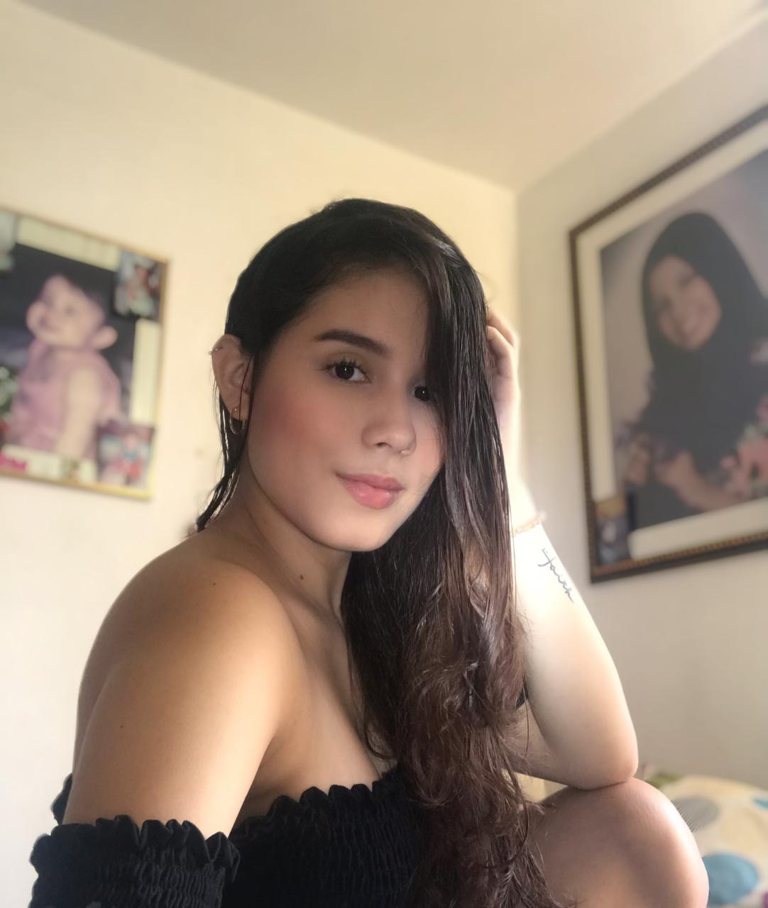

Soy Carlos Fernando Hernandez Rivera, estudiante de Comunicación Social, dedicado a la locución con el programa Giros de la Música y escribir artículos con temática cultural y deportiva de manera Freelance.
Interesado en dar solución a todas las dudas que se tengan sobre la página y explicar un poco más acerca del mundo deportivo.
Karen Ariadna Loaiza

Mi nombre es Karen Ariadna Loaiza Jaramillo, tengo 20 años, soy estudiante de comunicación social de la universidad Santiago de Cali y me encuentro cursando 6to semestre.
Soy una persona llena valores morales, muy extrovertida, empática con sueños y metas claras, que trabaja en si misma para salir adelante, siendo segura de mis capacidades y gracias al apoyo de mis padres. Pero también me lleno de dudas y miedos de enfrentar la vida, sin embargo, vivo mi vida con responsabilidad.